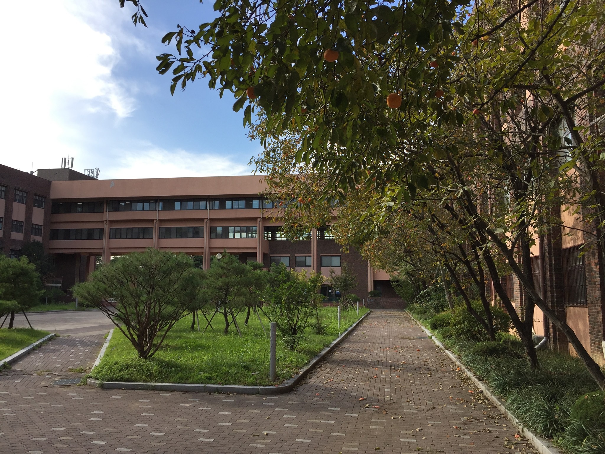

Geometry Seminar

About
The Geometry Seminar at the Mathematics Education department, Chungbuk National University is a research seminar on geometry and related topics including algebraic and geometric topology, global analysis, mathematical physics, geometry education, and related applications to science and engineering. For more information about the seminar, contact the webmaster.
The Organizer: Byungdo Park
Schedule, Year 2022
TBA
Schedule, Year 2021
No meeting.
Schedule, Year 2020
29 October 2020 17:00--18:00 at N7 Room 404
Homotopy fiber product of differentiable manifolds
Dr. Hsuan-Yi Liao (Korea Institute for Advanced Study in Seoul, Republic of Korea)
A fiber product of smooth manifolds might not be a manifold. Thus, we extend the category of smooth manifolds to a larger category in which one can consider homotopy fiber products of manifolds. In the talk, following a framework of abstract homotopy theory, I will present a differential geometric way (using vector bundles and sections) to resolve the singular spaces raised from fiber products or intersection of smooth manifolds. The talk is mainly based on a joint work with Kai Behrend and Ping Xu.
Venue
Address: 1 Chungdaero Seowon-Gu, Cheongju 28644, Republic of Korea
Back to the Mathematics Education department main page